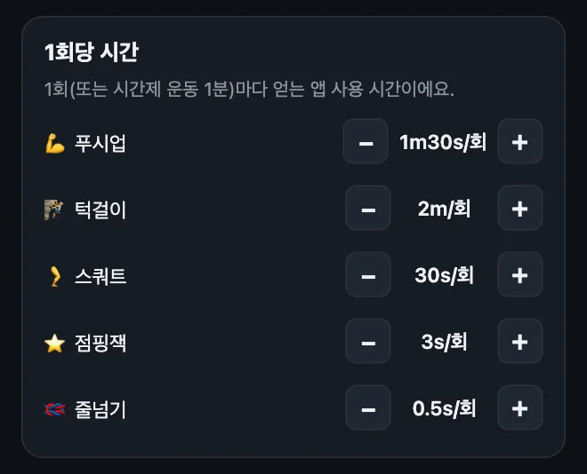

푸시업 1회에 스크린타임 몇 분이 적당할까?
안녕하세요 여러분! HonorFit에서는 기록한 운동 1회마다 앱 시간을 사는 셈인데, 그 값은 직접 정해요. 설정을 마친 분들한테 제일 많이 받는 질문이 바로 이거예요. 푸시업 1회는 얼마로 해야 해요? 1분? 10초? 제가 생각하는 방식을 알려 드릴게요.
기본값
아무것도 안 건드리면 이렇게 돼 있어요.
| 운동 | 기본으로 얻는 시간 |
|---|---|
| 💪 푸시업 | 1회마다 1분 |
| 🧗 턱걸이 | 1회마다 1분 30초 |
| 🔥 윗몸일으키기, 🦵 스쿼트 | 1회마다 30초 |
| 직접 추가한 운동 | 1회마다 30초 |
| 시간제 운동 (걷기, 요가, HIIT) | 1분마다 30초 |
| 거리 운동 | 1km마다 5분, 또는 1마일마다 8분 |
| 👟 걸음 수 | 1,000걸음마다 3분 |
그러니까 푸시업 20회면 인스타그램 20분이에요. 처음에는 이 정도가 딱 맞는 분이 많아요. 그런데 어떤 분한테는 너무 후하고, 어떤 분한테는 너무 짜요. 여러분은 어느 쪽인가요?
한 줄로 정하는 법
숫자 두 개를 생각해 보세요.
- 평범한 날, 차단한 앱을 얼마나 쓰면 괜찮다고 느끼나요? 바라는 숫자 말고 솔직한 숫자로요.
- 그 시간을 위해 하루 동안 나눠서 실제로 몇 회나 할 건가요?
그다음 나누면 돼요. 1회당 시간 = 시간 ÷ 횟수. 푸시업 60회로 틱톡 1시간을 보고 싶다면? 1회에 1분이에요. 같은 1시간인데 스쿼트라면 120회는 할 수 있다고요? 스쿼트 1회에 30초예요. 정말 이게 다예요.
2번의 답이 ‘별로 많지 않음’이어도 괜찮아요. 1회의 값을 높게 잡고, 기본 시간(설정, 무료)을 쓰면 매일 어느 정도 시간이 적립된 상태로 하루를 시작할 수 있어요.
가져다 쓸 만한 설정
| 운동 | 1회마다 얻는 시간 | 한 세트로 얻는 시간 |
|---|---|---|
| 푸시업 (초보) | 1분 30초 | 푸시업 10회 = 15분 |
| 푸시업 (꽤 오래 해 온 분) | 30초 | 푸시업 40회 = 20분 |
| 점핑잭 | 3초 | 점핑잭 100회 = 5분 |
| 줄넘기 (한 번 넘을 때마다) | 0.5초 | 600번 = 5분 |
| 턱걸이 | 2분 | 턱걸이 5회 = 10분 |
| 러닝 (거리) | 1km마다 6분 | 5km = 30분 |
규칙은 이거예요. 1회가 쉽고 빠를수록 값은 낮아야 해요. 점핑잭은 1회에 1초쯤 걸리니까, 턱걸이 1회와 같은 시간을 사면 안 되겠죠.
1.18.0에서 −/+ 버튼이 더 세밀해졌어요
얼마 전까지는 최솟값이 5초여서, 아주 빠른 운동(줄넘기, 점핑잭)은 값을 매기기가 애매했고, 3분에서 10분으로 올리는 데도 한참 걸렸어요. 한 사용자분이 두 가지 다 메일로 알려 주셔서, 1.18.0에서는 −/+ 버튼이 더 똑똑한 단계로 움직여요.
- 5초 미만: 4초, 3초, 2초, 1초, 그다음 0.5초, 0.25초, 0.1초.
- 5초~1분: 5초 단위.
- 1~3분: 15초 단위.
- 3~10분: 30초 단위.
- 10분 초과: 1분 단위.
이 버튼은 두 군데에 있어요.
- 설정 → 1회당 시간: 운동마다 −/+ 줄이 하나씩 있어요. 값만 살짝 바꾸고 싶을 때 제일 빨라요.
- 설정 → 운동 → 편집: 전체 편집 화면이에요. 여기서 운동을 추가하고, 이름을 바꾸고, 삭제하고, 횟수·분·거리 사이를 전환할 수도 있어요. 자세한 방법은 HonorFit에서 나만의 운동 설정하는 법에 정리해 뒀어요.

값이 잘못됐다는 신호
- 하지도 않은 운동을 기록하고 싶어진다. 시간이 너무 비싸요. 양심 시스템이 뭔가 말해 주고 있는 거예요. 그런 마음이 안 들 때까지 값을 한 단계씩 올리세요.
- 잔액이 절대 바닥나지 않는다. 시간이 너무 싸요. 값을 한두 단계 내리거나, 차단할 앱을 하나 더 추가하세요.
- 운동은 하는데 하기 싫어 죽겠다. 아마 값이 아니라 운동이 잘못된 거예요. 싫지 않은 운동으로 바꾸세요. 걷기도 돼요. 더 순한 동작도 되고요.
- 몇 시간씩 모아 뒀다가 밤에 다 써 버린다. 자정에 초기화(무료)를 켜면 안 쓴 시간이 쌓이지 않아요.
새로 바꾼 설정은 다시 바꾸기 전에 일주일쯤 써 보세요. 처음 며칠은 뭘 해도 어색하거든요.
하드 모드와 병가 모드
평소 설정이 안 맞는 날을 위해, 홈 상단에 💀 하드 모드 버튼을 둘 수 있어요(설정 → 하드·병가 모드, 무료). 한 번 누르면 모든 운동 1회가 절반만 벌어요. 한 번 더 누르면 🤒 병가 모드가 돼서 1회마다 두 배를 벌어요. 몸이 안 좋은 날을 위한 거예요. 또 누르면 평소대로 돌아가요. 실제로 설정한 값은 절대 안 바뀌니까 되돌릴 것도 없어요.
저는 트레이너가 아니에요: 저는 앱을 만드는 사람이지 코치가 아니에요. 운동하다가 아프면 멈추세요. 부상이나 건강 문제가 있다면, 내 몸을 잘 아는 사람에게 나한테 맞는 게 뭔지 물어보세요. 그런 다음 거기에 맞춰 HonorFit을 설정하면 돼요.
HonorFit Blocker는 iPhone과 Android용 무료 앱 차단 앱이에요. 운동도, 그 운동의 값도 직접 정해요. 양심 시스템, 카메라 없음, 모든 데이터는 내 폰 안에만 있어요.